●森鴎外『ヰタ・セクスアリス』
●アンリ・ド・レニエエ作、森鴎外（森林太郎）訳『復讐』
| 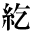 | 1_89_89.gif |
●桑原隲蔵『支那史上の偉人（孔子と孔明）』 ●桑原隲蔵『支那人の文弱と保守』 ●桑原隲蔵『大師の入唐』 |
| 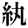 | 1_89_90.gif |
●芥川龍之介『木曾義仲論』 ●夏目漱石『一夜』 |
| 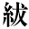 | 1_89_94.gif |
●内藤湖南『易疑』 ●森鴎外『山椒大夫』 |
| 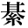 | 1_90_9.gif |
●中島敦『名人傳』（旧字・旧仮名） ●中島敦『名人伝』（新字・新仮名） |
| 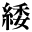 | 1_90_11.gif |
●岡本綺堂『玉藻の前』 ●黒島伝治『武装せる市街』 |
| 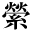 | 1_90_16.gif |
●尾崎紅葉『金色夜叉』 ●幸田露伴『突貫紀行』 ●夏目漱石『幻影の盾』 ●横瀬夜雨『花守』 |
| 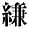 | 1_90_17.gif |
●尾崎紅葉『金色夜叉』 ●夏目漱石『草枕』 |
| 1_90_18.gif |
●芥川龍之介『水の三日』 ●河上肇『御萩と七種粥』 ●三遊亭圓朝、鈴木行三校訂『業平文治漂流奇談』 ●徳田秋声『仮装人物』 ●夏目漱石『明暗』 |
|
| 1_90_20.gif |
●幸田露伴『平将門』 ●内藤湖南『爾雅の新研究』 |
|
| 1_90_21.gif |
●上田敏訳詩集『海潮音』 ●夏目漱石『薤露行』 |
|
| 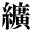 | 1_90_23.gif |
●芥川龍之介『枯野抄』 |
| 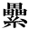 | 1_90_24.gif |
●芥川龍之介『開化の殺人』 ●芥川龍之介『地獄変』（新字・旧仮名） ●芥川龍之介『地獄變』（旧字・旧仮名） ●中島敦『光と風と夢』 ●中島敦『李陵』 |
| 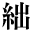 | 2_84_18.gif |
●内藤湖南『易疑』 |
| 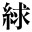 | 2_84_28.gif |
●森鴎外『心中』 ●森鴎外『ヰタ・セクスアリス』 ●アンリ・ド・レニエエ作、森鴎外（森林太郎）訳『復讐』 |
|
|
2_84_31.gif |
●徳田秋声『あらくれ』 |
| 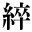 | 2_84_39.gif |
●尾崎紅葉『金色夜叉』 |
| 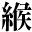 | 2_84_44.gif |
●南方熊楠『十二支考（１）虎に関する史話と伝説民俗』 |
| 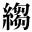 | 2_84_49.gif |
●尾崎紅葉『金色夜叉』 |
|
|
2_84_52.gif |
●幸田露伴『花のいろいろ』 |
| 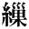 | 2_84_55.gif |
●森鴎外『二人の友』 |
| 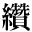 | 2_84_63.gif |
●内藤湖南『支那歴史的思想の起源』 |
| 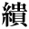 | 0212_5256.gif |
●芥川龍之介『秋山図』 |
| gaiji001.gif |
●尾崎紅葉『金色夜叉』 |
|
| gaiji002.gif |
●内藤湖南『概括的唐宋時代觀』 |
|
|
|
gaiji003.gif |
●正岡子規『寒山落木 卷一』 |